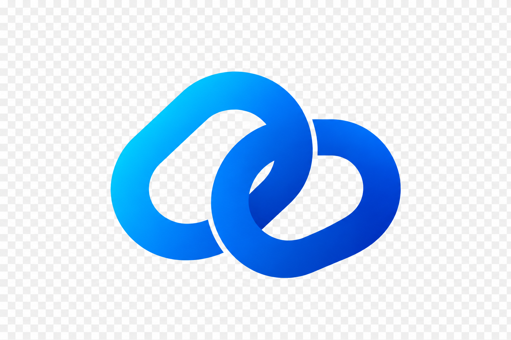

MS
Marina Souza
@marinasouza · há 12 h
Às vezes, a melhor ideia nasce de uma conversa sem pressa. O que inspira vocês hoje?
Imagem Bolo
Bolo

Às vezes, a melhor ideia nasce de uma conversa sem pressa. O que inspira vocês hoje?
ImagemBolo
Mais do que acompanhar tendências, gosto de descobrir quem está por trás delas. Bom encontrar tanta gente criativa por aqui.
WikipediaVocê viu todas as publicações disponíveis dos perfis que segue.
Volte mais tarde ou descubra novas conexões.
Não encontramos perfis ou publicações para “fotografia noturna em marte”. Tente
outros termos para continuar explorando.
Confira a escrita dos termos. Use palavras mais simples ou busque pelo nome de um perfil.
Esta área pode receber novas funções futuramente.